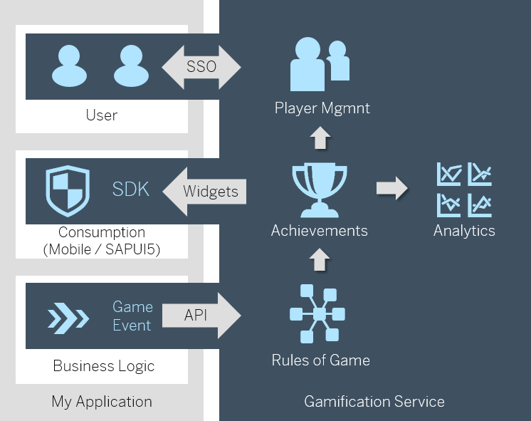

The SAP Cloud Platform, gamification service allows the rapid introduction of gamification concepts into applications. The service includes an online development and operations environment (gamification workbench) for easy implementation and analysis of gamification concepts. The underlying gamification rule management provides support for sophisticated gamification concepts, covering time constraints, complex nested missions and collaborative games. The built-in analytics module makes it possible to perform advanced analysis of the player's behavior in order to facilitate continuous improvement of game concepts.

Development effort for introducing gamification in new and existing apps
Limits of achievement systems and existing platforms regarding the complexity of supported game mechanics and the speed of feedback
Manageability of sophisticated gamification concepts meeting enterprise performance, security, and scalability requirements
Web-based IDE (gamification workbench) for modeling game mechanics and rules
Gamification engine for real-time processing of sophisticated gamification concepts involving time constraints and cooperation
Built-in runtime game analytics for continuous improvement of game designs
Web API for easy integration
Simple SAP UI5 integration based on widgets
Single-Sign-On (SSO) support based on Identity Authentication
Enterprise-level performance and scalability